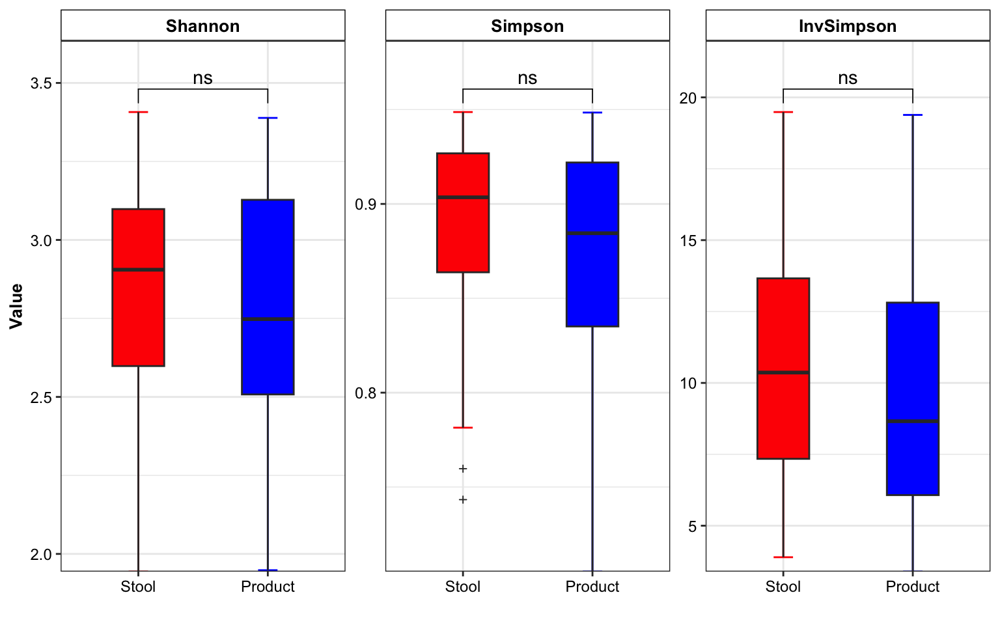

Chapter 10 Test Example
10.3 Step1: Convert inputs into phyloseq data
metaphlan2_res_list <- import_metaphlan_taxa(data_metaphlan2 = metaphlan2_res,
taxa_level = "Species")
tax_tab <- metaphlan2_res_list$tax_tab
otu_tab <- metaphlan2_res_list$abu_tab
colnames(otu_tab) <- gsub("X", "S_", colnames(otu_tab))
sam_tab <- metadata %>% data.frame() %>%
dplyr::mutate(Group=ifelse(SampleType == "粪便", "Stool",
ifelse(SampleType == "QC", "QC", "Product"))) %>%
dplyr::select(SampleTubeID, Group, everything())
rownames(sam_tab) <- paste0("S_", sam_tab$SeqID_MGS)
overlap_samples <- dplyr::intersect(rownames(sam_tab), colnames(otu_tab))
otu_tab_cln <- otu_tab[, match(overlap_samples, colnames(otu_tab))]
sam_tab_cln <- sam_tab[match(overlap_samples, rownames(sam_tab)), ]
rownames(sam_tab_cln) <- overlap_samples
metaphlan2_ps <- get_metaphlan_phyloseq(
otu_tab = otu_tab_cln,
sam_tab = sam_tab_cln,
tax_tab = tax_tab)
metaphlan2_ps## phyloseq-class experiment-level object
## otu_table() OTU Table: [ 315 taxa and 145 samples ]
## sample_data() Sample Data: [ 145 samples by 12 sample variables ]
## tax_table() Taxonomy Table: [ 315 taxa by 7 taxonomic ranks ]10.4 Step2: Transform limit of detection (LOD) into Zeros
# species
metaphlan2_ps_LOD_species <- aggregate_LOD_taxa(ps = metaphlan2_ps,
taxa_level = "Species",
cutoff = 1e-04)
# genus
metaphlan2_ps_LOD_genus <- aggregate_LOD_taxa(ps = metaphlan2_ps,
taxa_level = "Genus",
cutoff = 1e-04)
# order
metaphlan2_ps_LOD_order <- aggregate_LOD_taxa(ps = metaphlan2_ps,
taxa_level = "Order",
cutoff = 1e-04)
if (!dir.exists("DataSet/Step2/")) {
dir.create("DataSet/Step2/")
}
saveRDS(metaphlan2_ps_LOD_species, "DataSet/Step2/Donor_MGS_phyloseq_LOD_species.RDS", compress = TRUE)
saveRDS(metaphlan2_ps_LOD_genus, "DataSet/Step2/Donor_MGS_phyloseq_LOD_genus.RDS", compress = TRUE)
saveRDS(metaphlan2_ps_LOD_order, "DataSet/Step2/Donor_MGS_phyloseq_LOD_order.RDS", compress = TRUE)10.5 Step3: BRS checking
metaphlan2_ps <- readRDS("DataSet/Step1/Donor_MGS_phyloseq.RDS")
metaphlan2_ps_LOD_species <- aggregate_LOD_taxa(ps = metaphlan2_ps,
taxa_level = "Species",
cutoff = 1e-04)
tail(metaphlan2_ps_LOD_species@sam_data %>% data.frame())## SampleTubeID Group Date_Sequencing ProductID SampleType ProductBatch Date_Sampling Date_Receiving SeqID_MGS SeqID_16s
## S_7769 GGM50-210730 Stool 2021-08-03 M50 粪便 CYM50-210735 2021.07.30 2021-08-06 7769 7929
## S_7770 CYM50-210735-0727 Product 2021-08-03 M50 肠菌胶囊 CYM50-210735 2021.07.27 2021-08-06 7770 7930
## S_7771 CYM50-210735-0728 Product 2021-08-03 M50 肠菌胶囊 CYM50-210735 2021.07.28 2021-08-06 7771 7931
## S_7772 CYM50-210735-0729 Product 2021-08-03 M50 肠菌胶囊 CYM50-210735 2021.07.29 2021-08-06 7772 7932
## S_7773 CYM50-210735-0730 Product 2021-08-03 M50 肠菌胶囊 CYM50-210735 2021.07.30 2021-08-06 7773 7933
## S_7222 Community QC <NA> Ref QC <NA> <NA> <NA> 7222 7327
## Pipeline_MGS Pipeline_16s
## S_7769 /share/work/HPC/work_tmp/PipelineJob_180_20210923/output /share/projects/Engineering/pipeline_output/PipelineJob_304_20211203
## S_7770 /share/work/HPC/work_tmp/PipelineJob_180_20210923/output /share/projects/Engineering/pipeline_output/PipelineJob_304_20211203
## S_7771 /share/work/HPC/work_tmp/PipelineJob_180_20210923/output /share/projects/Engineering/pipeline_output/PipelineJob_304_20211203
## S_7772 /share/work/HPC/work_tmp/PipelineJob_180_20210923/output /share/projects/Engineering/pipeline_output/PipelineJob_304_20211203
## S_7773 /share/work/HPC/work_tmp/PipelineJob_180_20210923/output /share/projects/Engineering/pipeline_output/PipelineJob_304_20211203
## S_7222 /share/work/HPC/work_tmp/PipelineJob_180_20210923/output /share/projects/Engineering/pipeline_output/PipelineJob_304_20211203## Noting: the Reference Matrix is for MGS
##
## ############Matched baterica of the BRS sample#############
## The number of BRS' bacteria matched the Reference Matrix is [2]
## s__Enterococcus_faecalis
## s__Escherichia_coli
## The number of bacteria unmatched the Reference Matrix is [24]
## s__Propionibacterium_acnes
## s__Bifidobacterium_adolescentis
## s__Bifidobacterium_bifidum
## s__Bifidobacterium_longum
## s__Bifidobacterium_pseudocatenulatum
## s__Collinsella_aerofaciens
## s__Eggerthella_unclassified
## s__Bacteroides_fragilis
## s__Bacteroides_intestinalis
## s__Bacteroides_ovatus
## s__Bacteroides_thetaiotaomicron
## s__Bacteroides_uniformis
## s__Bacteroides_vulgatus
## s__Bacteroides_xylanisolvens
## s__Parabacteroides_goldsteinii
## s__Prevotella_copri
## s__Enterococcus_faecium
## s__Lactobacillus_pentosus
## s__Lactobacillus_salivarius
## s__Streptococcus_salivarius
## s__Coprococcus_comes
## s__Dorea_formicigenerans
## s__Roseburia_hominis
## s__Faecalibacterium_prausnitzii
## The number of the additional bacteria compared to the Reference Matrix is [2]
## ###########################################################
##
## ##################Status of the BRS sample##################
## Whether the BRS has the all bateria of Reference Matrix: FALSE
## Correlation Coefficient of the BRS is: 2.22e-16
## Bray Curtis of the BRS is: 0.1017
## Impurity of the BRS is: 72.95
## ###########################################################
## #####Final Evaluation Results of the BRS #######
## The BRS of sequencing dataset didn't pass the cutoff of the Reference Matrix
## ###########################################################
## $Matrix
## 7682 7683 7684 7685 7842 7843 7844 7845 S_7222 mean
## Propionibacterium_acnes 0.28649 0.22355 0.32199 0.28276 0.37568 0.44201 0.41135 0.39489 NA 0.30430222
## Bifidobacterium_adolescentis 7.05611 6.28460 6.57297 6.25448 4.69357 4.80628 4.94943 4.84278 NA 5.05113556
## Bifidobacterium_bifidum 1.32803 1.19346 1.26883 1.05154 1.34640 1.40471 1.43721 1.48097 NA 1.16790556
## Bifidobacterium_longum 10.31832 9.25812 9.69184 7.76031 11.03311 11.61484 12.29030 11.69019 NA 9.29522556
## Bifidobacterium_pseudocatenulatum 6.89760 6.36177 7.39605 5.76804 6.19464 6.47094 7.41615 6.27837 NA 5.86484000
## Collinsella_aerofaciens 0.56189 0.53249 0.60476 0.47934 0.65513 0.68833 0.76063 0.66896 NA 0.55017000
## Eggerthella_unclassified 1.21416 1.06143 1.19122 0.85743 1.36030 1.48457 1.61204 1.50700 NA 1.14312778
## Bacteroides_fragilis 6.56752 7.19828 7.27658 7.31998 7.10174 6.70626 6.60219 6.11088 NA 6.09815889
## Bacteroides_intestinalis 0.09448 0.09550 0.10216 0.09326 0.08448 0.09556 0.08852 0.10469 NA 0.08429444
## Bacteroides_ovatus 3.08552 3.27226 3.10904 3.24565 3.51376 3.50063 3.37872 3.42300 NA 2.94762000
## Bacteroides_thetaiotaomicron 3.24207 3.31897 3.22418 3.43809 3.35611 3.38323 3.29098 3.30355 NA 2.95079778
## Bacteroides_uniformis 2.24271 2.24035 1.92015 2.18435 2.43230 2.38180 2.13830 2.41437 NA 1.99492556
## Bacteroides_vulgatus 3.06672 3.20369 3.14979 3.15352 3.24822 3.09280 3.13038 3.06113 NA 2.78958333
## Bacteroides_xylanisolvens 1.55687 1.84824 1.91166 1.85273 1.75220 1.74002 1.69811 1.67676 NA 1.55962111
## Parabacteroides_goldsteinii 5.92564 5.95499 6.04638 5.85282 6.85811 6.50800 6.35758 6.96646 NA 5.60777556
## Prevotella_copri 2.03757 1.99619 1.92504 2.15422 1.57638 1.60584 1.57913 1.59224 NA 1.60740111
## Enterococcus_faecalis 11.46695 12.46200 11.92117 11.95884 13.71474 13.67805 13.21782 13.27297 17.19286 13.20948889
## Enterococcus_faecium 4.57147 4.64943 4.52463 4.76407 5.45590 5.17641 5.15276 5.24896 NA 4.39373667
## Lactobacillus_pentosus 0.75844 0.75524 0.72958 0.80796 0.91548 0.89940 0.81308 0.94831 NA 0.73638778
## Lactobacillus_salivarius 4.89005 5.18462 5.12745 7.79194 2.72469 2.25673 2.10356 2.02202 NA 3.56678444
## Streptococcus_salivarius 3.54220 3.74119 3.62036 4.01546 2.90216 2.70193 2.61760 2.57348 NA 2.85715333
## Coprococcus_comes 2.28009 2.42978 2.25227 2.82904 1.21527 1.16485 1.07160 1.07834 NA 1.59124889
## Dorea_formicigenerans 4.83413 5.02149 5.18268 5.56891 3.34720 3.09877 3.08677 2.70732 NA 3.64969667
## Roseburia_hominis 0.04384 0.04183 0.04107 0.02304 0.03853 0.03464 0.03532 0.03597 NA 0.03269333
## Faecalibacterium_prausnitzii 0.65572 0.60153 0.60112 0.62079 0.54147 0.55383 0.58806 0.54655 NA 0.52323000
## Escherichia_coli 8.76957 8.33337 7.70416 8.11247 10.44118 10.33823 9.96261 11.06988 9.85431 9.39842000
## Impurity_level 2.70584 2.73563 2.58287 1.75896 3.12125 4.17134 4.20980 4.97996 72.95000 11.02396111
## Evaluation
## Propionibacterium_acnes S_7222 didn't pass the threshold (2023-10-27 16:59:47).
## Bifidobacterium_adolescentis S_7222 didn't pass the threshold (2023-10-27 16:59:47).
## Bifidobacterium_bifidum S_7222 didn't pass the threshold (2023-10-27 16:59:47).
## Bifidobacterium_longum S_7222 didn't pass the threshold (2023-10-27 16:59:47).
## Bifidobacterium_pseudocatenulatum S_7222 didn't pass the threshold (2023-10-27 16:59:47).
## Collinsella_aerofaciens S_7222 didn't pass the threshold (2023-10-27 16:59:47).
## Eggerthella_unclassified S_7222 didn't pass the threshold (2023-10-27 16:59:47).
## Bacteroides_fragilis S_7222 didn't pass the threshold (2023-10-27 16:59:47).
## Bacteroides_intestinalis S_7222 didn't pass the threshold (2023-10-27 16:59:47).
## Bacteroides_ovatus S_7222 didn't pass the threshold (2023-10-27 16:59:47).
## Bacteroides_thetaiotaomicron S_7222 didn't pass the threshold (2023-10-27 16:59:47).
## Bacteroides_uniformis S_7222 didn't pass the threshold (2023-10-27 16:59:47).
## Bacteroides_vulgatus S_7222 didn't pass the threshold (2023-10-27 16:59:47).
## Bacteroides_xylanisolvens S_7222 didn't pass the threshold (2023-10-27 16:59:47).
## Parabacteroides_goldsteinii S_7222 didn't pass the threshold (2023-10-27 16:59:47).
## Prevotella_copri S_7222 didn't pass the threshold (2023-10-27 16:59:47).
## Enterococcus_faecalis S_7222 didn't pass the threshold (2023-10-27 16:59:47).
## Enterococcus_faecium S_7222 didn't pass the threshold (2023-10-27 16:59:47).
## Lactobacillus_pentosus S_7222 didn't pass the threshold (2023-10-27 16:59:47).
## Lactobacillus_salivarius S_7222 didn't pass the threshold (2023-10-27 16:59:47).
## Streptococcus_salivarius S_7222 didn't pass the threshold (2023-10-27 16:59:47).
## Coprococcus_comes S_7222 didn't pass the threshold (2023-10-27 16:59:47).
## Dorea_formicigenerans S_7222 didn't pass the threshold (2023-10-27 16:59:47).
## Roseburia_hominis S_7222 didn't pass the threshold (2023-10-27 16:59:47).
## Faecalibacterium_prausnitzii S_7222 didn't pass the threshold (2023-10-27 16:59:47).
## Escherichia_coli S_7222 didn't pass the threshold (2023-10-27 16:59:47).
## Impurity_level S_7222 didn't pass the threshold (2023-10-27 16:59:47).
##
## $Assess
## Gold_Cutoff BRS
## Coef 0.8726 2.220e-16
## Bray 0.2064 1.017e-01
## Impurity 6.4400 7.295e+01metaphlan2_ps_LOD_species_remove_BRS <- get_GroupPhyloseq(
ps = metaphlan2_ps_LOD_species,
group = "Group",
group_names = "QC",
discard = TRUE)
metaphlan2_ps_LOD_species_remove_BRS## phyloseq-class experiment-level object
## otu_table() OTU Table: [ 180 taxa and 144 samples ]
## sample_data() Sample Data: [ 144 samples by 12 sample variables ]
## tax_table() Taxonomy Table: [ 180 taxa by 7 taxonomic ranks ]10.6 Step4: Extracting specific taxonomic level
- Removing spike-in sample (BRS)
metaphlan2_ps <- readRDS("DataSet/Step1/Donor_MGS_phyloseq.RDS")
metaphlan2_ps_remove_BRS <- get_GroupPhyloseq(
ps = metaphlan2_ps,
group = "Group",
group_names = "QC",
discard = TRUE)
metaphlan2_ps_LOD_species_remove_BRS## phyloseq-class experiment-level object
## otu_table() OTU Table: [ 180 taxa and 144 samples ]
## sample_data() Sample Data: [ 144 samples by 12 sample variables ]
## tax_table() Taxonomy Table: [ 180 taxa by 7 taxonomic ranks ]- Species
metaphlan2_ps_remove_BRS_LOD_species <- aggregate_LOD_taxa(
ps = metaphlan2_ps_remove_BRS,
taxa_level = "Species",
cutoff = 1e-04)
metaphlan2_ps_remove_BRS_LOD_species## phyloseq-class experiment-level object
## otu_table() OTU Table: [ 180 taxa and 144 samples ]
## sample_data() Sample Data: [ 144 samples by 12 sample variables ]
## tax_table() Taxonomy Table: [ 180 taxa by 7 taxonomic ranks ]- Genus
metaphlan2_ps_remove_BRS_LOD_genus <- aggregate_LOD_taxa(
ps = metaphlan2_ps_remove_BRS,
taxa_level = "Genus",
cutoff = 1e-04)
metaphlan2_ps_remove_BRS_LOD_genus## phyloseq-class experiment-level object
## otu_table() OTU Table: [ 67 taxa and 144 samples ]
## sample_data() Sample Data: [ 144 samples by 12 sample variables ]
## tax_table() Taxonomy Table: [ 67 taxa by 6 taxonomic ranks ]- Phylum
metaphlan2_ps_remove_BRS_LOD_phylum <- aggregate_LOD_taxa(
ps = metaphlan2_ps_remove_BRS,
taxa_level = "Phylum",
cutoff = 1e-04)
metaphlan2_ps_remove_BRS_LOD_phylum## phyloseq-class experiment-level object
## otu_table() OTU Table: [ 7 taxa and 144 samples ]
## sample_data() Sample Data: [ 144 samples by 12 sample variables ]
## tax_table() Taxonomy Table: [ 7 taxa by 2 taxonomic ranks ]- output
if (!dir.exists("DataSet/Step4/")) {
dir.create("DataSet/Step4/")
}
saveRDS(metaphlan2_ps_remove_BRS_LOD_species, "DataSet/Step4/Donor_MGS_phyloseq_remove_BRS_LOD_species.RDS", compress = TRUE)
saveRDS(metaphlan2_ps_remove_BRS_LOD_genus, "DataSet/Step4/Donor_MGS_phyloseq_remove_BRS_LOD_genus.RDS", compress = TRUE)
saveRDS(metaphlan2_ps_remove_BRS_LOD_phylum, "DataSet/Step4/Donor_MGS_phyloseq_remove_BRS_LOD_phylum.RDS", compress = TRUE)10.7 Step5: GlobalView
metaphlan2_ps_remove_BRS_LOD_species <- readRDS("DataSet/Step4/Donor_MGS_phyloseq_remove_BRS_LOD_species.RDS")
# alpha
metaphlan2_ps_remove_BRS_species_alpha <- run_alpha_diversity(
ps = metaphlan2_ps_remove_BRS_LOD_species,
measures = c("Shannon", "Simpson", "InvSimpson"))
plot_boxplot(data = metaphlan2_ps_remove_BRS_species_alpha,
y_index = c("Shannon", "Simpson", "InvSimpson"),
group = "Group",
group_names = c("Stool", "Product"),
group_color = c("red", "blue"))

Figure 10.1: diversity and ordination and composition(Example)
# beta
metaphlan2_ps_remove_BRS_species_beta <- run_beta_diversity(
ps = metaphlan2_ps_remove_BRS_LOD_species,
method = "bray")
plot_distance_corrplot(datMatrix = metaphlan2_ps_remove_BRS_species_beta$BetaDistance)Figure 10.2: diversity and ordination and composition(Example)
# permanova
run_permanova(ps = metaphlan2_ps_remove_BRS_LOD_species,
method = "bray",
columns = "Group")## SumsOfSample Df SumsOfSqs MeanSqs F.Model R2 Pr(>F) AdjustedPvalue
## Group 144 1 1.328635 1.328635 6.307557 0.04253025 0.001 0.001# beta dispersion
beta_df <- run_beta_diversity(ps = metaphlan2_ps_remove_BRS_LOD_species,
method = "bray",
group = "Group")##
## Permutation test for homogeneity of multivariate dispersions
## Permutation: free
## Number of permutations: 999
##
## Response: Distances
## Df Sum Sq Mean Sq F N.Perm Pr(>F)
## Groups 1 0.01652 0.016518 1.1697 999 0.282
## Residuals 142 2.00532 0.014122
##
## Pairwise comparisons:
## (Observed p-value below diagonal, permuted p-value above diagonal)
## Product Stool
## Product 0.281
## Stool 0.28129# ordination
metaphlan2_ps_ordination <- run_ordination(
ps = metaphlan2_ps_remove_BRS_LOD_species,
group = "Group",
method = "PCoA")
plot_Ordination(ResultList = metaphlan2_ps_ordination,
group = "Group",
group_names = c("Stool", "Product"),
group_color = c("blue", "red"))Figure 10.3: diversity and ordination and composition(Example)
# Microbial composition
plot_stacked_bar_XIVZ(
phyloseq = metaphlan2_ps_remove_BRS_LOD_species,
level = "Phylum",
feature = "Group")Figure 10.4: diversity and ordination and composition(Example)
10.8 Step6: Differential Analysis
metaphlan2_ps_remove_BRS_LOD_species <- readRDS("DataSet/Step4/Donor_MGS_phyloseq_remove_BRS_LOD_species.RDS")
# filter & trim
metaphlan2_ps_remove_BRS_species_filter <- run_filter(ps = metaphlan2_ps_remove_BRS_LOD_species,
cutoff = 1e-4,
unclass = TRUE)
metaphlan2_ps_remove_BRS_species_filter_trim <- run_trim(object = metaphlan2_ps_remove_BRS_species_filter,
cutoff = 0.1, trim = "feature")
metaphlan2_ps_remove_BRS_species_filter_trim## phyloseq-class experiment-level object
## otu_table() OTU Table: [ 110 taxa and 144 samples ]
## sample_data() Sample Data: [ 144 samples by 12 sample variables ]
## tax_table() Taxonomy Table: [ 110 taxa by 7 taxonomic ranks ]# lefse
# metaphlan2_ps_lefse <- run_lefse(
# ps = metaphlan2_ps_remove_BRS_species_filter_trim,
# group = "Group",
# group_names = c("Stool", "Product"),
# norm = "CPM",
# Lda = 2)
metaphlan2_ps_lefse <- run_lefse2(
ps = metaphlan2_ps_remove_BRS_species_filter_trim,
group = "Group",
group_names = c("Stool", "Product"),
norm = "CPM",
lda_cutoff = 2)
# # don't run this code when you do lefse in reality
# metaphlan2_ps_lefse$LDA_Score <- metaphlan2_ps_lefse$LDA_Score * 1000
plot_lefse(
da_res = metaphlan2_ps_lefse,
x_index = "LDA_Score",
x_index_cutoff = 2,
group_color = c("green", "red"))
Figure 10.5: Differential Analysis (Example)
metaphlan2_ps_wilcox <- run_wilcox(
ps = metaphlan2_ps_remove_BRS_species_filter_trim,
group = "Group",
group_names = c("Stool", "Product"))
plot_volcano(
da_res = metaphlan2_ps_wilcox,
group_names = c("Stool", "Product"),
x_index = "Log2FoldChange (Rank)\nStool_vs_Product",
x_index_cutoff = 0.5,
y_index = "Pvalue",
y_index_cutoff = 0.05,
group_color = c("red", "grey", "blue"),
topN = 5)
Figure 10.6: Differential Analysis (Example)
10.9 Systematic Information
## ─ Session info ───────────────────────────────────────────────────────────────────────────────────────────────────────────────────────────────
## setting value
## version R version 4.1.3 (2022-03-10)
## os macOS Monterey 12.2.1
## system x86_64, darwin17.0
## ui RStudio
## language (EN)
## collate en_US.UTF-8
## ctype en_US.UTF-8
## tz Asia/Shanghai
## date 2023-10-27
## rstudio 2023.09.0+463 Desert Sunflower (desktop)
## pandoc 3.1.1 @ /Applications/RStudio.app/Contents/Resources/app/quarto/bin/tools/ (via rmarkdown)
##
## ─ Packages ───────────────────────────────────────────────────────────────────────────────────────────────────────────────────────────────────
## package * version date (UTC) lib source
## abind 1.4-5 2016-07-21 [2] CRAN (R 4.1.0)
## ade4 1.7-22 2023-02-06 [2] CRAN (R 4.1.2)
## ALDEx2 1.30.0 2022-11-01 [2] Bioconductor
## annotate 1.72.0 2021-10-26 [2] Bioconductor
## AnnotationDbi 1.60.2 2023-03-10 [2] Bioconductor
## ape * 5.7-1 2023-03-13 [2] CRAN (R 4.1.2)
## askpass 1.1 2019-01-13 [2] CRAN (R 4.1.0)
## backports 1.4.1 2021-12-13 [2] CRAN (R 4.1.0)
## base64enc 0.1-3 2015-07-28 [2] CRAN (R 4.1.0)
## bayesm 3.1-5 2022-12-02 [2] CRAN (R 4.1.2)
## Biobase * 2.54.0 2021-10-26 [2] Bioconductor
## BiocGenerics * 0.40.0 2021-10-26 [2] Bioconductor
## BiocParallel 1.28.3 2021-12-09 [2] Bioconductor
## biomformat 1.22.0 2021-10-26 [2] Bioconductor
## Biostrings 2.62.0 2021-10-26 [2] Bioconductor
## bit 4.0.5 2022-11-15 [2] CRAN (R 4.1.2)
## bit64 4.0.5 2020-08-30 [2] CRAN (R 4.1.0)
## bitops 1.0-7 2021-04-24 [2] CRAN (R 4.1.0)
## blob 1.2.4 2023-03-17 [2] CRAN (R 4.1.2)
## bookdown 0.34 2023-05-09 [2] CRAN (R 4.1.2)
## broom 1.0.5 2023-06-09 [2] CRAN (R 4.1.3)
## bslib 0.5.0 2023-06-09 [2] CRAN (R 4.1.3)
## cachem 1.0.8 2023-05-01 [2] CRAN (R 4.1.2)
## callr 3.7.3 2022-11-02 [2] CRAN (R 4.1.2)
## car 3.1-2 2023-03-30 [2] CRAN (R 4.1.2)
## carData 3.0-5 2022-01-06 [2] CRAN (R 4.1.2)
## caTools 1.18.2 2021-03-28 [2] CRAN (R 4.1.0)
## cccd 1.6 2022-04-08 [2] CRAN (R 4.1.2)
## cellranger 1.1.0 2016-07-27 [2] CRAN (R 4.1.0)
## checkmate 2.2.0 2023-04-27 [2] CRAN (R 4.1.2)
## class 7.3-22 2023-05-03 [2] CRAN (R 4.1.2)
## classInt 0.4-9 2023-02-28 [2] CRAN (R 4.1.2)
## cli 3.6.1 2023-03-23 [2] CRAN (R 4.1.2)
## cluster 2.1.4 2022-08-22 [2] CRAN (R 4.1.2)
## coda 0.19-4 2020-09-30 [2] CRAN (R 4.1.0)
## codetools 0.2-19 2023-02-01 [2] CRAN (R 4.1.2)
## coin 1.4-2 2021-10-08 [2] CRAN (R 4.1.0)
## colorspace 2.1-0 2023-01-23 [2] CRAN (R 4.1.2)
## compositions 2.0-6 2023-04-13 [2] CRAN (R 4.1.2)
## conflicted * 1.2.0 2023-02-01 [2] CRAN (R 4.1.2)
## corpcor 1.6.10 2021-09-16 [2] CRAN (R 4.1.0)
## corrplot 0.92 2021-11-18 [2] CRAN (R 4.1.0)
## cowplot 1.1.1 2020-12-30 [2] CRAN (R 4.1.0)
## crayon 1.5.2 2022-09-29 [2] CRAN (R 4.1.2)
## crosstalk 1.2.0 2021-11-04 [2] CRAN (R 4.1.0)
## data.table 1.14.8 2023-02-17 [2] CRAN (R 4.1.2)
## DBI 1.1.3 2022-06-18 [2] CRAN (R 4.1.2)
## DelayedArray 0.20.0 2021-10-26 [2] Bioconductor
## deldir 1.0-9 2023-05-17 [2] CRAN (R 4.1.3)
## DEoptimR 1.0-14 2023-06-09 [2] CRAN (R 4.1.3)
## DESeq2 1.34.0 2021-10-26 [2] Bioconductor
## devtools * 2.4.5 2022-10-11 [2] CRAN (R 4.1.2)
## digest 0.6.33 2023-07-07 [1] CRAN (R 4.1.3)
## doParallel 1.0.17 2022-02-07 [2] CRAN (R 4.1.2)
## doSNOW 1.0.20 2022-02-04 [2] CRAN (R 4.1.2)
## dplyr * 1.1.2 2023-04-20 [2] CRAN (R 4.1.2)
## DT 0.28 2023-05-18 [2] CRAN (R 4.1.3)
## dynamicTreeCut 1.63-1 2016-03-11 [2] CRAN (R 4.1.0)
## e1071 1.7-13 2023-02-01 [2] CRAN (R 4.1.2)
## edgeR 3.36.0 2021-10-26 [2] Bioconductor
## ellipsis 0.3.2 2021-04-29 [2] CRAN (R 4.1.0)
## emmeans 1.8.7 2023-06-23 [1] CRAN (R 4.1.3)
## estimability 1.4.1 2022-08-05 [2] CRAN (R 4.1.2)
## evaluate 0.21 2023-05-05 [2] CRAN (R 4.1.2)
## FactoMineR 2.8 2023-03-27 [2] CRAN (R 4.1.2)
## fansi 1.0.4 2023-01-22 [2] CRAN (R 4.1.2)
## farver 2.1.1 2022-07-06 [2] CRAN (R 4.1.2)
## fastcluster 1.2.3 2021-05-24 [2] CRAN (R 4.1.0)
## fastmap 1.1.1 2023-02-24 [2] CRAN (R 4.1.2)
## fdrtool 1.2.17 2021-11-13 [2] CRAN (R 4.1.0)
## filematrix 1.3 2018-02-27 [2] CRAN (R 4.1.0)
## flashClust 1.01-2 2012-08-21 [2] CRAN (R 4.1.0)
## FNN 1.1.3.2 2023-03-20 [2] CRAN (R 4.1.2)
## foreach 1.5.2 2022-02-02 [2] CRAN (R 4.1.2)
## foreign 0.8-84 2022-12-06 [2] CRAN (R 4.1.2)
## forestplot 3.1.1 2022-12-06 [2] CRAN (R 4.1.2)
## formatR 1.14 2023-01-17 [2] CRAN (R 4.1.2)
## Formula 1.2-5 2023-02-24 [2] CRAN (R 4.1.2)
## fs 1.6.2 2023-04-25 [2] CRAN (R 4.1.2)
## futile.logger * 1.4.3 2016-07-10 [2] CRAN (R 4.1.0)
## futile.options 1.0.1 2018-04-20 [2] CRAN (R 4.1.0)
## genefilter 1.76.0 2021-10-26 [2] Bioconductor
## geneplotter 1.72.0 2021-10-26 [2] Bioconductor
## generics 0.1.3 2022-07-05 [2] CRAN (R 4.1.2)
## GenomeInfoDb * 1.30.1 2022-01-30 [2] Bioconductor
## GenomeInfoDbData 1.2.7 2022-03-09 [2] Bioconductor
## GenomicRanges * 1.46.1 2021-11-18 [2] Bioconductor
## ggiraph 0.8.7 2023-03-17 [2] CRAN (R 4.1.2)
## ggiraphExtra 0.3.0 2020-10-06 [2] CRAN (R 4.1.2)
## ggplot2 * 3.4.2 2023-04-03 [2] CRAN (R 4.1.2)
## ggpubr * 0.6.0 2023-02-10 [2] CRAN (R 4.1.2)
## ggrepel 0.9.3 2023-02-03 [2] CRAN (R 4.1.2)
## ggsci 3.0.0 2023-03-08 [2] CRAN (R 4.1.2)
## ggsignif 0.6.4 2022-10-13 [2] CRAN (R 4.1.2)
## ggVennDiagram 1.2.2 2022-09-08 [2] CRAN (R 4.1.2)
## glasso 1.11 2019-10-01 [2] CRAN (R 4.1.0)
## glmnet 4.1-7 2023-03-23 [2] CRAN (R 4.1.2)
## glue * 1.6.2 2022-02-24 [2] CRAN (R 4.1.2)
## Gmisc * 3.0.2 2023-03-13 [2] CRAN (R 4.1.2)
## GO.db 3.14.0 2022-04-11 [2] Bioconductor
## gplots 3.1.3 2022-04-25 [2] CRAN (R 4.1.2)
## gridExtra 2.3 2017-09-09 [2] CRAN (R 4.1.0)
## gtable 0.3.3 2023-03-21 [2] CRAN (R 4.1.2)
## gtools 3.9.4 2022-11-27 [2] CRAN (R 4.1.2)
## highr 0.10 2022-12-22 [2] CRAN (R 4.1.2)
## Hmisc 5.1-0 2023-05-08 [2] CRAN (R 4.1.2)
## hms 1.1.3 2023-03-21 [2] CRAN (R 4.1.2)
## htmlTable * 2.4.1 2022-07-07 [2] CRAN (R 4.1.2)
## htmltools 0.5.5 2023-03-23 [2] CRAN (R 4.1.2)
## htmlwidgets 1.6.2 2023-03-17 [2] CRAN (R 4.1.2)
## httpuv 1.6.11 2023-05-11 [2] CRAN (R 4.1.3)
## httr 1.4.6 2023-05-08 [2] CRAN (R 4.1.2)
## huge 1.3.5 2021-06-30 [2] CRAN (R 4.1.0)
## igraph 1.5.0 2023-06-16 [1] CRAN (R 4.1.3)
## impute 1.68.0 2021-10-26 [2] Bioconductor
## insight 0.19.3 2023-06-29 [2] CRAN (R 4.1.3)
## IRanges * 2.28.0 2021-10-26 [2] Bioconductor
## irlba 2.3.5.1 2022-10-03 [2] CRAN (R 4.1.2)
## iterators 1.0.14 2022-02-05 [2] CRAN (R 4.1.2)
## jpeg 0.1-10 2022-11-29 [2] CRAN (R 4.1.2)
## jquerylib 0.1.4 2021-04-26 [2] CRAN (R 4.1.0)
## jsonlite 1.8.7 2023-06-29 [2] CRAN (R 4.1.3)
## kableExtra 1.3.4 2021-02-20 [2] CRAN (R 4.1.2)
## KEGGREST 1.34.0 2021-10-26 [2] Bioconductor
## KernSmooth 2.23-22 2023-07-10 [2] CRAN (R 4.1.3)
## knitr 1.43 2023-05-25 [2] CRAN (R 4.1.3)
## labeling 0.4.2 2020-10-20 [2] CRAN (R 4.1.0)
## lambda.r 1.2.4 2019-09-18 [2] CRAN (R 4.1.0)
## later 1.3.1 2023-05-02 [2] CRAN (R 4.1.2)
## lattice * 0.21-8 2023-04-05 [2] CRAN (R 4.1.2)
## lavaan 0.6-15 2023-03-14 [2] CRAN (R 4.1.2)
## leaps 3.1 2020-01-16 [2] CRAN (R 4.1.0)
## libcoin 1.0-9 2021-09-27 [2] CRAN (R 4.1.0)
## lifecycle 1.0.3 2022-10-07 [2] CRAN (R 4.1.2)
## limma 3.50.3 2022-04-07 [2] Bioconductor
## locfit 1.5-9.8 2023-06-11 [2] CRAN (R 4.1.3)
## LOCOM 1.1 2022-08-05 [2] Github (yijuanhu/LOCOM@c181e0f)
## lubridate 1.9.2 2023-02-10 [2] CRAN (R 4.1.2)
## magrittr * 2.0.3 2022-03-30 [2] CRAN (R 4.1.2)
## MASS 7.3-60 2023-05-04 [2] CRAN (R 4.1.2)
## Matrix 1.6-0 2023-07-08 [2] CRAN (R 4.1.3)
## MatrixGenerics * 1.6.0 2021-10-26 [2] Bioconductor
## matrixStats * 1.0.0 2023-06-02 [2] CRAN (R 4.1.3)
## mbzinb 0.2 2022-03-16 [2] local
## memoise 2.0.1 2021-11-26 [2] CRAN (R 4.1.0)
## metagenomeSeq 1.36.0 2021-10-26 [2] Bioconductor
## mgcv 1.8-42 2023-03-02 [2] CRAN (R 4.1.2)
## microbiome 1.16.0 2021-10-26 [2] Bioconductor
## mime 0.12 2021-09-28 [2] CRAN (R 4.1.0)
## miniUI 0.1.1.1 2018-05-18 [2] CRAN (R 4.1.0)
## mixedCCA 1.6.2 2022-09-09 [2] CRAN (R 4.1.2)
## mnormt 2.1.1 2022-09-26 [2] CRAN (R 4.1.2)
## modeltools 0.2-23 2020-03-05 [2] CRAN (R 4.1.0)
## multcomp 1.4-25 2023-06-20 [2] CRAN (R 4.1.3)
## multcompView 0.1-9 2023-04-09 [2] CRAN (R 4.1.2)
## multtest 2.50.0 2021-10-26 [2] Bioconductor
## munsell 0.5.0 2018-06-12 [2] CRAN (R 4.1.0)
## mvtnorm 1.2-2 2023-06-08 [2] CRAN (R 4.1.3)
## mycor 0.1.1 2018-04-10 [2] CRAN (R 4.1.0)
## NADA 1.6-1.1 2020-03-22 [2] CRAN (R 4.1.0)
## NetCoMi * 1.0.3 2022-07-14 [2] Github (stefpeschel/NetCoMi@d4d80d3)
## nlme * 3.1-162 2023-01-31 [2] CRAN (R 4.1.2)
## nnet 7.3-19 2023-05-03 [2] CRAN (R 4.1.2)
## openssl 2.0.6 2023-03-09 [2] CRAN (R 4.1.2)
## pbapply 1.7-2 2023-06-27 [2] CRAN (R 4.1.3)
## pbivnorm 0.6.0 2015-01-23 [2] CRAN (R 4.1.0)
## pcaPP 2.0-3 2022-10-24 [2] CRAN (R 4.1.2)
## permute * 0.9-7 2022-01-27 [2] CRAN (R 4.1.2)
## pheatmap * 1.0.12 2019-01-04 [2] CRAN (R 4.1.0)
## phyloseq * 1.38.0 2021-10-26 [2] Bioconductor
## picante * 1.8.2 2020-06-10 [2] CRAN (R 4.1.0)
## pillar 1.9.0 2023-03-22 [2] CRAN (R 4.1.2)
## pkgbuild 1.4.2 2023-06-26 [2] CRAN (R 4.1.3)
## pkgconfig 2.0.3 2019-09-22 [2] CRAN (R 4.1.0)
## pkgload 1.3.2.1 2023-07-08 [2] CRAN (R 4.1.3)
## plyr 1.8.8 2022-11-11 [2] CRAN (R 4.1.2)
## png 0.1-8 2022-11-29 [2] CRAN (R 4.1.2)
## ppcor 1.1 2015-12-03 [2] CRAN (R 4.1.0)
## preprocessCore 1.56.0 2021-10-26 [2] Bioconductor
## prettyunits 1.1.1 2020-01-24 [2] CRAN (R 4.1.0)
## processx 3.8.2 2023-06-30 [2] CRAN (R 4.1.3)
## profvis 0.3.8 2023-05-02 [2] CRAN (R 4.1.2)
## promises 1.2.0.1 2021-02-11 [2] CRAN (R 4.1.0)
## protoclust 1.6.4 2022-04-01 [2] CRAN (R 4.1.2)
## proxy 0.4-27 2022-06-09 [2] CRAN (R 4.1.2)
## ps 1.7.5 2023-04-18 [2] CRAN (R 4.1.2)
## pscl 1.5.5.1 2023-05-10 [2] CRAN (R 4.1.2)
## psych 2.3.6 2023-06-21 [2] CRAN (R 4.1.3)
## pulsar 0.3.10 2023-01-26 [2] CRAN (R 4.1.2)
## purrr * 1.0.1 2023-01-10 [2] CRAN (R 4.1.2)
## qgraph 1.9.5 2023-05-16 [2] CRAN (R 4.1.3)
## quadprog 1.5-8 2019-11-20 [2] CRAN (R 4.1.0)
## qvalue 2.26.0 2021-10-26 [2] Bioconductor
## R6 2.5.1 2021-08-19 [2] CRAN (R 4.1.0)
## RAIDA 1.0 2022-03-14 [2] local
## rbibutils 2.2.13 2023-01-13 [2] CRAN (R 4.1.2)
## RColorBrewer * 1.1-3 2022-04-03 [2] CRAN (R 4.1.2)
## Rcpp * 1.0.11 2023-07-06 [1] CRAN (R 4.1.3)
## RcppZiggurat 0.1.6 2020-10-20 [2] CRAN (R 4.1.0)
## RCurl 1.98-1.12 2023-03-27 [2] CRAN (R 4.1.2)
## Rdpack 2.4 2022-07-20 [2] CRAN (R 4.1.2)
## readr * 2.1.4 2023-02-10 [2] CRAN (R 4.1.2)
## readxl * 1.4.3 2023-07-06 [2] CRAN (R 4.1.3)
## remotes 2.4.2 2021-11-30 [2] CRAN (R 4.1.0)
## reshape2 1.4.4 2020-04-09 [2] CRAN (R 4.1.0)
## reticulate 1.30 2023-06-09 [2] CRAN (R 4.1.3)
## Rfast 2.0.8 2023-07-03 [2] CRAN (R 4.1.3)
## rhdf5 2.38.1 2022-03-10 [2] Bioconductor
## rhdf5filters 1.6.0 2021-10-26 [2] Bioconductor
## Rhdf5lib 1.16.0 2021-10-26 [2] Bioconductor
## rlang 1.1.1 2023-04-28 [1] CRAN (R 4.1.2)
## rmarkdown 2.23 2023-07-01 [2] CRAN (R 4.1.3)
## robustbase 0.99-0 2023-06-16 [2] CRAN (R 4.1.3)
## rootSolve 1.8.2.3 2021-09-29 [2] CRAN (R 4.1.0)
## rpart 4.1.19 2022-10-21 [2] CRAN (R 4.1.2)
## RSpectra 0.16-1 2022-04-24 [2] CRAN (R 4.1.2)
## RSQLite 2.3.1 2023-04-03 [2] CRAN (R 4.1.2)
## rstatix 0.7.2 2023-02-01 [2] CRAN (R 4.1.2)
## rstudioapi 0.15.0 2023-07-07 [2] CRAN (R 4.1.3)
## Rtsne 0.16 2022-04-17 [2] CRAN (R 4.1.2)
## RVenn 1.1.0 2019-07-18 [2] CRAN (R 4.1.0)
## rvest 1.0.3 2022-08-19 [2] CRAN (R 4.1.2)
## S4Vectors * 0.32.4 2022-03-29 [2] Bioconductor
## sandwich 3.0-2 2022-06-15 [2] CRAN (R 4.1.2)
## sass 0.4.6 2023-05-03 [2] CRAN (R 4.1.2)
## scales 1.2.1 2022-08-20 [2] CRAN (R 4.1.2)
## scatterplot3d 0.3-44 2023-05-05 [2] CRAN (R 4.1.2)
## sessioninfo 1.2.2 2021-12-06 [2] CRAN (R 4.1.0)
## sf 1.0-7 2022-03-07 [2] CRAN (R 4.1.2)
## shape 1.4.6 2021-05-19 [2] CRAN (R 4.1.0)
## shiny 1.7.4.1 2023-07-06 [2] CRAN (R 4.1.3)
## sjlabelled 1.2.0 2022-04-10 [2] CRAN (R 4.1.2)
## sjmisc 2.8.9 2021-12-03 [2] CRAN (R 4.1.0)
## snow 0.4-4 2021-10-27 [2] CRAN (R 4.1.0)
## SpiecEasi * 1.1.2 2022-07-14 [2] Github (zdk123/SpiecEasi@c463727)
## SPRING 1.0.4 2022-08-03 [2] Github (GraceYoon/SPRING@3d641a4)
## stringi 1.7.12 2023-01-11 [2] CRAN (R 4.1.2)
## stringr 1.5.0 2022-12-02 [2] CRAN (R 4.1.2)
## SummarizedExperiment * 1.24.0 2021-10-26 [2] Bioconductor
## survival 3.5-5 2023-03-12 [2] CRAN (R 4.1.2)
## svglite 2.1.1 2023-01-10 [2] CRAN (R 4.1.2)
## systemfonts 1.0.4 2022-02-11 [2] CRAN (R 4.1.2)
## tensorA 0.36.2 2020-11-19 [2] CRAN (R 4.1.0)
## TH.data 1.1-2 2023-04-17 [2] CRAN (R 4.1.2)
## tibble * 3.2.1 2023-03-20 [2] CRAN (R 4.1.2)
## tidyr * 1.3.0 2023-01-24 [2] CRAN (R 4.1.2)
## tidyselect 1.2.0 2022-10-10 [2] CRAN (R 4.1.2)
## timechange 0.2.0 2023-01-11 [2] CRAN (R 4.1.2)
## truncnorm 1.0-9 2023-03-20 [2] CRAN (R 4.1.2)
## tzdb 0.4.0 2023-05-12 [2] CRAN (R 4.1.3)
## umap 0.2.10.0 2023-02-01 [2] CRAN (R 4.1.2)
## units 0.8-2 2023-04-27 [2] CRAN (R 4.1.2)
## urlchecker 1.0.1 2021-11-30 [2] CRAN (R 4.1.0)
## usethis * 2.2.2 2023-07-06 [2] CRAN (R 4.1.3)
## utf8 1.2.3 2023-01-31 [2] CRAN (R 4.1.2)
## uuid 1.1-0 2022-04-19 [2] CRAN (R 4.1.2)
## vctrs 0.6.3 2023-06-14 [1] CRAN (R 4.1.3)
## vegan * 2.6-4 2022-10-11 [2] CRAN (R 4.1.2)
## VennDiagram * 1.7.3 2022-04-12 [2] CRAN (R 4.1.2)
## VGAM 1.1-8 2023-03-09 [2] CRAN (R 4.1.2)
## viridis * 0.6.3 2023-05-03 [2] CRAN (R 4.1.2)
## viridisLite * 0.4.2 2023-05-02 [2] CRAN (R 4.1.2)
## vroom 1.6.3 2023-04-28 [2] CRAN (R 4.1.2)
## webshot 0.5.5 2023-06-26 [2] CRAN (R 4.1.3)
## WGCNA 1.72-1 2023-01-18 [2] CRAN (R 4.1.2)
## withr 2.5.0 2022-03-03 [2] CRAN (R 4.1.2)
## Wrench 1.12.0 2021-10-26 [2] Bioconductor
## xfun 0.40 2023-08-09 [1] CRAN (R 4.1.3)
## XMAS2 * 2.2.0 2023-10-27 [1] local
## XML 3.99-0.14 2023-03-19 [2] CRAN (R 4.1.2)
## xml2 1.3.5 2023-07-06 [2] CRAN (R 4.1.3)
## xtable 1.8-4 2019-04-21 [2] CRAN (R 4.1.0)
## XVector 0.34.0 2021-10-26 [2] Bioconductor
## yaml 2.3.7 2023-01-23 [2] CRAN (R 4.1.2)
## zCompositions 1.4.0-1 2022-03-26 [2] CRAN (R 4.1.2)
## zlibbioc 1.40.0 2021-10-26 [2] Bioconductor
## zoo 1.8-12 2023-04-13 [2] CRAN (R 4.1.2)
##
## [1] /Users/zouhua/Library/R/x86_64/4.1/library
## [2] /Library/Frameworks/R.framework/Versions/4.1/Resources/library
##
## ──────────────────────────────────────────────────────────────────────────────────────────────────────────────────────────────────────────────